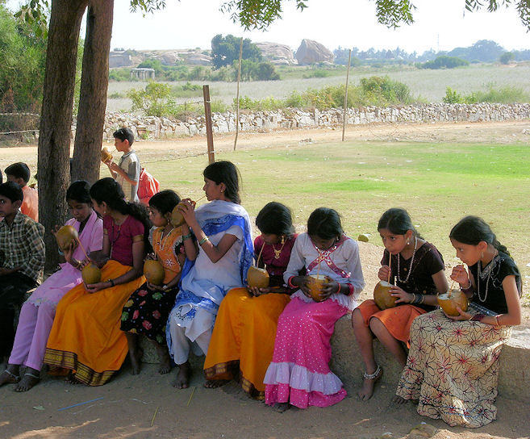
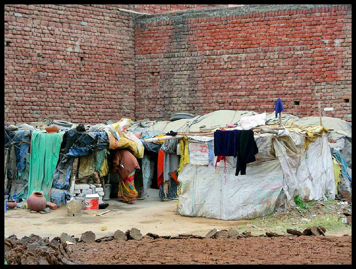

mailto:payer@payer.de
Zitierweise | cite as:
Payer, Alois <1944 - >: Sanskritkurs. -- Lösung der Übungen. -- Übungen Lektion 21 - 25. -- Fassung vom 2008-12-24. -- URL: http://www.payer.de/sanskritkurs/uebung21.htm
Erstmals hier publiziert: 2008-12-24
Überarbeitungen:
Anlass: Lehrveranstaltungen 1980 - 1984
©opyright: Dieser Text steht der Allgemeinheit zur Verfügung. Eine Verwertung in Publikationen, die über übliche Zitate hinausgeht, bedarf der ausdrücklichen Genehmigung des Verfassers
Dieser Text ist Teil der Abteilung Sanskrit von Tüpfli's Global Village Library
Falls Sie die diakritischen Zeichen nicht dargestellt bekommen, installieren Sie eine Schrift mit Diakritika wie z.B. Tahoma.
Die Devanāgarī-Zeichen sind in Unicode kodiert. Sie benötigen also eine Unicode-Devanāgarī-Schrift.
A) Lösen Sie folgende Komposita in Sanskrit auf und übersetzen Sie sie:
१. अनादिकालिकसंसरः । der Lauf durch die Wiedergeburten ohne Anfang und feste Zeitdauer
२. अनादिमध्यान्तः । ohne Anfang, Mitte und Ende
३. महामैत्रीकरुणाचित्तः । mit einem Herz voll großen Wohlwollens und Mitgefühls
४. सर्वहतान्धकारः । der überall die Finsternis zerstört hat
B) Übersetzen Sie:
मृतं दहन्नग्निः सतीमपि दहति ॥१॥ Das Feuer, das den Toten verbrennt, verbrennt auch die treue Gattin (सती).
सद्गुरुर्महाकविस्तोत्रैर्महादेवं स्तौति ॥२॥ Der gute Meister preist den großen Gott mit Lobliedern der großen Dichters.
महान्ति फलान्यदन्तो बाला जलमापि पिबन्ति ॥३॥ Die Knaben, die große Früchte essen, trinken auch Wasser.
पुजां कुर्वञ्जनो यजते च स्तौति च देवताम् ॥४॥ Während der Verehrung opfert und preist der Mann die Gottheit.
गुरूपनीतनरो द्विजः ॥५॥ Ein Zweimalgeborener ist ein Mann, der vom Meister in den Veda initiiert wurde.
जितक्रोधो घ्नन्तमप्यरिं न द्वेष्टि । क्रोधजितस्तु द्वेष्टि ॥६॥ Wer den Zorn besiegt hat, der hasst einen Feind nicht, auch wenn dieser ihn tötet. Wer aber vom Zorn besiegt ist, hasst.
Abb.: हतान्धकारा दीपाः
[Bildquelle: mckaysavage. --
http://www.flickr.com/photos/mckaysavage/3099964027/. -- Zugriff am
2008-12-23. --
 Creative
Commons Lizenz (Namensnennung)]
Creative
Commons Lizenz (Namensnennung)]
A) Bilden und übersetzen Sie das Absolutiv zu folgenden Verben:
B) Übersetzen Sie und lösen Sie die Komposita in Sanskrit auf:
अन्नं पक्त्वा ब्राह्मणदास्यत्ति ॥१॥ ब्राह्मणस्य दासी । Die Dienerin des Brahmanen kochte Speise und isst nun.
इष्टदेवतापूजां कृत्वेन्द्रादिदेवान्सद्ब्राह्मणाः स्तुवन्ति ॥२॥ इष्टाया देवताया पूजां । इन्द्र आदिर्येषां तान्देवान् । सन्तो ब्राह्मणाः । Die guten Brahmanen verehrten ihre persönliche Gottheit und preisen nun Indra und die übrigen Götter.
प्रस्थाय रामः सपुत्रः सद्गुरुश्रवणर्थेन ब्राह्मणग्रामं गच्छति ॥३॥ पुत्रेण सह । सतो गुरोः श्रवणार्थेन । ब्राह्मणानां ग्रामम् । Rāma ist mit seinem Sohn aufgebrochen und geht ins Brahmanendorf, um den guten Meister zu hören.
अनिष्ट्वा नरो भगवद्भक्तिमात्रेणापि मोक्षमाप्नोति ॥४॥ Auch wenn er nie geopfert hat, erlangt ein Mensch allein durch Hingabe an den Ehrwürdigen (कृष्ण) Erlösung.
गृहगर्भं प्रविश्य ब्राह्मणपुत्रमुपस्थाय क्षत्रियशूरो वक्ति ॥५॥ गृहस्य गर्भम् । ब्राह्मणस्य पुत्रम् । क्षत्रिय एव शूरः । Der Kṣatriyaheld betritt das Innere des Hauses, stellte sich in ehrerbietiger Haltung vor den Sohn des Brahmanen und spricht.
सम्बुध्य दुःखाद्यार्यसत्यानि प्रोच्य सुगतो मोक्षमार्गेण नरान्नयति ॥६॥ दुःखमादिर्येषां तान्यार्याणि सत्यानि । सुष्टु गतः । मोक्षस्य मार्गेण । मोक्षं मार्गेण । Buddha (सुगत) ist zur Erkenntnis erwacht, hat die Wahrheit vom Leid und die übrigen edlen Wahrheiten verkündet und führt nun die Menschen auf dem Weg zur Erlösung.
मन्त्रं विस्मृत्य यजन्यज्ञदोषं करोति ॥७॥ यज्ञस्य दोषम् । Da er den Spruch vergessen hat macht der Opfernde einen Opferfehler.
धनं प्राप्य बुद्धमार्गभिक्षवो दुष्यन्ति ॥८॥ बुद्धस्य मार्गो मार्गो येषां ते भिक्षवः । Wenn Sie Geld bekommen, verderben Mönche, die den Weg Buddhas gehen.
अनार्यशत्रुभिः संगत्य नरसिंहा विजयन्ते ॥९॥ आनार्यैः शत्रुभिः । नराः सिंहा इव । Die löwengleiche Männer sind mit den Feinden, die keine Ārya sind, zusammengestoßen, und siegen vollkommen.
पुण्यं कृत्वा सत्यमेवोदित्वा नरो नरकं नोपपद्यते ॥१०॥
Wenn er verdienstvolles getan hat und nur die Wahrheit gesprochen hat, kommt ein Mensch in keine Hölle.
C) Machen Sie aus obigen Sätzen (außer Sätze 8 und 10) Passivkonstruktionen
अन्नं पक्त्वा ब्राह्मणदास्यत्ति ॥१॥ अन्नं पक्त्वा ब्राह्मणदास्याद्यते ॥१॥
इष्टदेवतापूजां कृत्वेन्द्रादिदेवान्सद्ब्राह्मणाः स्तुवन्ति ॥२॥ इष्टदेवतापूजां कृत्वेन्द्रादिदेवाः सद्ब्राह्मणैः स्तूयन्ते ॥२॥
प्रस्थाय रामः सपुत्रः सद्गुरुश्रवार्थेन ब्राह्मणग्रामं गच्छति ॥३॥ प्रस्थाय रामेण सपुत्रेण सद्गुरुश्रवणार्थेन ब्राह्मणग्रामं गम्यते ॥३॥
अनिष्ट्वा नरो भगवद्भक्तिमात्रेणापि मोक्षमाप्नोति ॥४॥ अनिष्ट्वा नरेण भगवद्भक्तिमात्रेणापि मोक्ष आप्यते ॥४॥
गृहगर्भं प्रविश्य ब्राह्मणपुत्रमुपस्थाय क्षत्रियशूरो वक्ति ॥५॥ गृहगर्भं प्रविश्य ब्राह्मणपुत्रमुपस्थाय क्षत्रियशूरेणोच्यते ॥५॥
सम्बुध्य दुःखाद्यार्यसत्यानि प्रोच्य सुगतो मोक्षमार्गेण नरान्नयति ॥६॥ सम्बुध्य दुःखाद्यार्यसत्यानि प्रोच्य सुगतेन मोक्षमार्गेण नरा नीयन्ते ॥६॥
मन्त्रं विस्मृत्य यजन्यज्ञदोषं करोति ॥७॥ मन्त्रं विस्मृत्य यजता यज्ञदोषः क्रियते ॥७॥
अनार्यशत्रुभिः संगत्य नरसिंहा विजयन्ते ॥९॥ अनार्यशत्रुभिः संगत्य नरसिंहैर्विजीयते ॥९॥
Abb.: धनं प्राप्य बुद्धमार्गभिक्षवो दुष्यन्ति
Thailand
[Bildquelle: dbz885.--
http://www.flickr.com/photos/dibdabdebi/217939309/. -- Zugriff am
2008-12-23. --


 Creative
Commons Lizenz (Namensnennung, keine kommerzielle Nutzung, share alike)]
Creative
Commons Lizenz (Namensnennung, keine kommerzielle Nutzung, share alike)]
A) Folgende Wurzeln bilden den Infinitiv ohne Bindevokal -i-. Bilden Sie den Infinitiv unter Beachtung der Lautveränderungen zu:
B) Folgende Wurzeln bilden den Infinitiv mit Bindevokal -i-. Bilden Sie den Infinitiv zu:
C) Folgende Wurzeln wahlweise mit oder ohne Bindevokal:
D) Übersetzen Sie und lösen Sie die Komposita auf:
नराः स्वर्गं लब्धुं देवान्यज्ञ्नैर्यष्टुमिच्छन्ति ॥१॥ Um einen Himmel zu erlangen, wünschen Menschen, Götter mit Opfern zu verehren-
महापुण्यं कृत्वा गतपापजनेन नरकं गन्तुं न शक्यते ॥२॥ महत्पुण्यम् । गतं पापं यस्य तेन जनेन । Wenn jemand viel Verdienstliches getan hat, kann eine Mensch, der frei von bösem ist, nicht in eine Hölle kommen.
फलवन्ति पुण्यानीति सज्जनो ऽधर्मं कर्तुं नेच्छति ॥३॥ सञ्जनः । न धर्मम् । Da verdienstvolle Taten fruchtbar sind, will eine guter Mensch kein Unrecht tun.
सुगतो लोकान्मोक्तुमार्यसत्यान्युपदिशति ॥४॥ Um die Welten zu erlösen, lehrt Buddha die edlen Wahrheiten.
शूद्रजनो ब्राह्मणेन सहात्तुं नार्हति ॥५॥ शुद्राणां जनः । Śūdras dürfen mit einem Brahmanen zusammen nicht essen.
लोभसम्पन्ननरा नृत्यन्तीं सम्पन्नरूपदासीं द्रष्टुं गताः ॥६॥ लोभेन सम्पन्ना नराः । सम्पन्नं रूपं यस्यास्ताम् । Voll Gier sind die Männer gegangen, um die wunderschöne Dienerin tanzen zu sehen.
शूद्रया संगत्य ब्राह्मणो यष्टुं नार्हति ॥७॥ Wenn ein Brahmane mit einer Śūdra Geschlechtsverkehr hatte, darf er nicht opfern.
धर्मं श्रोतुकामा ब्राह्मणी सपुत्रा गुरुं द्रष्टुं महानगरं गता ॥८॥ श्रोतुं कामो यस्याः सा । पुत्रेण सह । महन्नगरम् । Weil sie über den Dharma hören wollte, ist die Brahmanin mit ihrem Sohn in die Großstadt gegangen, um den Meister zu treffen.
C) Übersetzen Sie folgendes सुभाषितम्
आहारनिद्राभयमैथुनं च
सामान्यमेतत्पशुभिर्नराणाम् ।
धर्मे हि तेषा्मधिको विशेषो
धर्मेण हीनाः पशुभिः समानाः ॥
Essen, Schlafen, Furcht und Sex ist den Menschen mit dem Vieh gemein. Der hervorhebende Unterschied der Menschen liegt im Dharma. Ohne Dharma sind sie dem Vieh gleich.
Abb.: आहारनिद्राभयमैथुनं च
सामान्यमेतत्पशुभिर्नराणाम् ।
जैसलमेर
[Bildquelle: Peter Davis. --
http://www.flickr.com/photos/pediddle/327742179/. -- Zugriff am 2008-12-23.
--


 Creative
Commons Lizenz (Namensnennung, keine kommerzielle Nutzung, keine Bearbeitung)]
Creative
Commons Lizenz (Namensnennung, keine kommerzielle Nutzung, keine Bearbeitung)]
Bitte keine Hilfsmittel benutzen!
A) Übersetzen Sie ins Sanskrit:
1. Die fünf (पञ्च) "Qualen" sind: Unwissenheit, der falsche Glaube ans Ich, Zuneigung, Abneigung und Anhänglichkeit an den Leib.
अविद्यास्मितारागद्वेषाभिनिवेशाः पञ्च क्लेशाः ।
2. Wissen gibt es für Gehorsam gegenüber einem Lehrer oder für viel Geld oder im Austausch gegen Wissen. Eine vierte Art von Wissenserwerb gibt es nicht.
गुरुशुश्रूषया विद्या
पुष्कलेन धनेन वा ।
अथवा विद्यया विद्या
चतुर्थी नैव विद्यते ॥
3. Ein Niedriger spricht, handelt aber nicht ; ein Guter spricht nicht, sondern handelt nur.
निचो वदति न कुरुते
वदति न साधुः करोत्येव ॥
4. Die Hilfswissenschaften zum Veda sind: Aussprachelehre, Ritualistik, Grammatik, Bedeutungslehre, Metrik (छन्दस्) und Kalenderlehre.
शिक्षा कल्पो व्याकरणं निरुक्तं छन्दो ज्योतिषमङ्गानि |
5. Yoga ist das Stoppen der Tätigkeiten des Denkorgans.
योगश्चित्तवृत्तिनिरोधः ॥
6. Recht siegt, nicht Unrecht ; Wahrheit siegt, nicht Lüge ; Geduld siegt, nicht Zorn ; Gott siegt, nicht ein Gegengott. (Passiv)
धर्मो जयति नधर्मः
सत्यं जयति नानृतम् |
क्षमा जयति न क्रोधो
देवो जयति नासुरः ||
7. Der "Stock" bewirkt Erwerb und sicheren Besitz von Philosophie, Veda und Ökonomie. Die Führung dieses Stocks ist Politik.
आन्वीक्षिकीत्रयीवार्त्तानां योगक्षेमसाधनो दण्डः, तस्य नीतिर्दण्डनीतिः ॥
8. Gattin, Sohn und Sklave, diese drei (त्रयस्) sind gemäß der Überlieferung besitzlos. Wozu diese kommen, das gehört dem, dem diese (drei) gehören.
भार्या पुत्रश्च दासश्च
त्रय एवाधनाः स्मृताः ।
यत्ते समधिगच्छन्ति
यस्य ते तस्य तद्धनम् ॥
9. Mücken wünschen eine Wunde, Herrscher wünschen Besitz, Niedrige wünschen Streit, Gute wünschen Frieden.
मक्षिका व्रणमिच्छन्ति
धनमिच्छन्ति पार्थिवाः |
नीचाः कलहमिच्छन्ति
शान्तिमिच्छन्ति साधवः ||
10. Die spezifische Pflicht eines Brahmanen ist: Studium, Lehren, Opfern als Opferherr, Opfern im Auftrag, Geben und Empfangen ; die eines Kṣatriya ist: Studium, Opfern als Opferherr, Geben, Lebensunterhalt durch Waffen, Hüten der Wesen ; die eines Vaiśya: Studium, Opfern als Opferherr, Geben, Ackerbau, Viehhaltung und Handel ; die eines Śūdra: Gehorsam gegenüber den Zweimalgeborenen, Wirtschaftstätigkeit, Tätigkeit (कर्म) von Handwerkern und Schaustellern.
स्वधर्मो ब्राह्मणस्याध्ययनमध्यापनं यजनं याजनं दानं प्रतिग्रहश्च । क्षत्रियस्याध्ययनं यजनं दानं शस्त्राजीवो भूतरक्षणं च । वैश्यस्याध्ययनं यजनं दानं कृषिपाशुपाल्ये वणिज्या च । शूद्रस्य द्विजातिशुश्रूषा वार्त्ता कारुकुशीलवकर्म च ॥
11. Abklärung des Bewusstseins geschieht aufgrund der meditativen Entfaltung von freundlichem Wohlwollen, Mitgefühl, Mitfreude und Gleichmut, die als Objekt Glück und Leid, Gutes und Böses haben.
मैत्रीकरुणामुदितोपेक्षाणां सुखदुःखपुण्यापुण्यविषयाणां भावनतश्चित्तप्रसादनम् ॥
12. Arme haben viele Söhne, obwohl sie sie nicht wünschen. Reiche haben keinen Sohn. Seltsam ist die Regung des Schicksals.
सन्ति पुत्राः सुबहवो
दरिद्राणामनिच्छताम् ।
नास्ति पुत्रः समृद्धानां
विचित्रं विधिचेष्टितम् ॥
14. Wen erschlägt nicht ein Frauenkörper (वपुस् n.) mit schlanker Taille, breiten Hüften, roten Lippen, schwarzen Augen, gebogenem Nabel, aufrechten Brüsten.
तनुमध्यं पृथुश्रोणि
रक्तौष्ठमसितेक्षणम् ।
नतनाभि वपुः स्त्रीणां
कं न हन्त्युन्नतस्तनम् ॥
B) Deklinieren Sie in allen Ihnen bekannten Kasus क्षत्रिया f.
क्षत्रिया
क्षात्रियाम्
क्षत्रियया
क्षत्रियायास्
क्षत्रियास्
क्षत्रियास्
क्षत्रियाभिस्
क्षत्रियानाम्
C) Geben Sie die Stammformen (Bedeutung, Präsensklasse, Modus, 3. sg. Präs. Indikativ, 3. sg. Passiv, PPP, Absolutiva, Infinitiv) zu folgenden Verben:
१. सह्
सह् 1Ā ertragen सहते Passiv सह्यते PPP सोढ Absolutiv 1 सोढ्वा
सहित्वाAbsolutiv 2 -सह्य Infinitiv सोढुम्
सहितुम्
२. पा (2x)
पा 1P trinken पिबति Passiv पीयते PPP पीत Absolutiv 1 पीत्वा Absolutiv 2 -पाय Infinitiv पातुम्
पा 2P hüten पाति Passiv पायते PPP पात Absolutiv 1 पात्वा Absolutiv 2 -पाय Infinitiv पातुम्
३. वच्
वच् 2P sprechen वक्ति Passiv उच्यते PPP उक्त Absolutiv 1 उक्त्वा Absolutiv 2 -उच्य Infinitiv वक्तुम्
४. हन्
हन् 2P erschlagen हन्ति, घन्ति Passiv हन्यते PPP हत Absolutiv 1 हत्वा Absolutiv 2 -हत्य Infinitiv हन्तुम्

Abb.: बालाः पिबन्ति
Hampi = ಹಂಪೆ
[Bildquelle: fraboof. --
http://www.flickr.com/photos/fraboof/2126653290/. -- Zugriff am 2008-12-24.
--

 Creative
Commons Lizenz (Namensnennung, share alike)]
Creative
Commons Lizenz (Namensnennung, share alike)]
A) Bilden Sie den Dativ Singular und den Dativ/(Ablativ) Plural und geben Sie die Bedeutung des Nominalstamms an:
B) Übersetzen Sie und lösen Sie die Komposita in Sanskrit auf:
ब्राह्मणो देवप्रतिमादर्शनाय गर्भगृहं विशति ॥१॥ देवस्य प्रतिमाया दर्शनाय । गर्भमेवे गृहम् । Der Brahmane betritt das innere Heiligtum, um das Götterbildnis zu sehen.
नरा धनलाभाय व्रतानि चरन्ति ॥२॥ धनस्य लाभाय । Menschen halten Gelübde, um reich zu werden.
गुरुर्धर्मोपदेशाय नगरं गतः ॥३॥ धर्मस्योपदेशाय । Der Meister ist in die Stadt gegangen, um Dharma zu unterrichten.
बाला अपि गुरुवचनश्रुत्यै नगरं गताः ॥४॥ गुरोर्वचनस्य श्रुत्यै । Auch die Kinder sind in die Stadt gegangen, um die Rede des Meisters zu hören.
देवप्रतिमायै गृहं गर्भगृहम् ॥५॥ देवस्य प्रतिमायै । गर्भ एव गृहम् । Das Innere Heiligtum ist ein Gebäude fürs Götterbild.
स्वर्गेभ्यो नराः पुण्यं कर्तुमिच्छन्ति ॥६॥ Menschen wollen um der Himmel willen Verdienstvolles tun.
मोक्षार्थं बुद्धगता बुद्ध्याप्तिमिच्छन्ति ॥७॥ मोक्षस्यार्थम् । बुद्धं गताः । बुद्धेराप्तिम् । Um erlöst zu werden, wollen Einsichtige erlösende Einsicht erlangen
देवास्तेभ्यो ऽकृतपुजाब्रामणेभ्यः क्रुध्यन्ति ॥८॥ न कृता पूजा यैस्तेभ्यो ब्राह्मणेभ्यः । Die Götter zürnen diesen Brahmanen, die ihnen keine Verehrung zollten.
मरणाय जना जायन्ते ॥९॥ Um zu sterben, werden Lebewesen geboren.
C) Geben Sie die Sätze B) 1-4 in Sanskrit wieder, indem Sie statt der Dative Infinitive (तुमुन्) setzen. Beachten Sie, dass der Infinitiv den gleichen Kasus regiert wie das entsprechende Verb.
ब्राह्मणो देवप्रतिमादर्शनाय गर्भगृहं विशति ॥१॥ ब्राह्मणो देवप्रतिमां द्रष्टुं गर्भगृहं विशति ॥१॥
नरा धनलाभाय व्रतानि चरन्ति ॥२॥ नरा धनं लब्धुं व्रतानि चरन्ति ॥२॥
गुरुर्धर्मोपदेशाय नगरं गतः ॥३॥ गुरुर्धर्ममुपदेष्टुं नगरं गतः ॥३॥
बाला अपि गुरुवचनश्रुत्यै नगरं गताः ॥४॥ बाला अपि गुरुवचनं श्रोतुं नगरं गताः ॥४॥
D) Ersetzen Sie in Satz A) 7 die Konstruktion mit -अर्थ durch einen gleichwertigen Dativ.
मोक्षार्थं बुद्धगता बुद्ध्याप्तिमिच्छन्ति ॥७॥ मोक्षाय बुद्धगता बुद्ध्याप्तिमिच्छन्ति ॥७॥
E) Ersetzen Sie in Satz A) 6 die Dativkonstruktion durch eine gleichwertige Konstruktion mit -अर्थ
स्वर्गेभ्यो नराः पुण्यं कर्तुमिच्छन्ति ॥६॥ स्वर्गार्थेन । स्वर्गार्थं। स्वर्गार्थाय नराः पुण्यं कर्तुमिच्छन्ति ॥६॥
Abb.: मरणाय जना जायन्ते
Nepal = नेपाल
[Bildquelle: ~Ans~. --
http://www.flickr.com/photos/ansdeblauwe/467399654/. -- Zugriff am
2008-12-24. --

 Creative
Commons Lizenz (Namensnennung, keine kommerzielle Nutzung)]
Creative
Commons Lizenz (Namensnennung, keine kommerzielle Nutzung)]
Übersetzen Sie ins Sanskrit:
1. Die Göttin, der man nicht geopfert hat, zürnt den Menschen. अनिष्टदेवी नरेभ्यः क्रुध्यति । कुप्यति ॥१॥
2. Er lässt die Kuh ins Dorf los. ग्रामाय धेनुं मुञ्जति ॥२॥
3. Jetzt reichts = Genug mit der Geduld. Aber: अलं क्षमया ॥३॥
4. Das ist gut (हित, सुख) für einen Brahmanen. एतद्ब्राह्मणाय सुखम् । हितम् ॥४॥
5. Verehrung (नमस्) sei Śiva! Verehrung sei Śrī Gaṇeśa! शिवाय नमः । श्रीगणेशाय नमः ॥५॥
6. Auf Wiedersehen! = Wohlergehen (स्वस्ति f.) Ihnen! स्वस्ति भवते । भवद्भ्यः । भवत्यै । भवतीभ्यः ॥६॥
7. Diese Frucht reicht zum Essen. इदं फलं अलं खादनाय ॥७॥
8. Ein Kämpfer ist dem (anderen) Kämpfer gewachsen (शक्त). शक्तो योधो योधाय ॥८॥
9. Selbst Viṣṇu übertrifft (प्र-भू + Dat.) Śiva nicht. विष्णुरपि शिवाय न प्रभवति ॥९॥
10. Nachdem ich mich vor den drei Weisen (Akk.) verbeugt habe (नमस्कृ)... Er verbeugt sich vor Narasiṃha (Dat.) मुनित्रयम् नमस्कृत्य ... । नरसिंहाय नमस्करोति ॥१०॥
11. Willkommen (स्वागतम्) Ihnen. Willkommen der Königin. स्वागतं भवद्भ्यः । स्वागतं देव्यै ॥११॥
12. Ich wünsche Ihnen Wohlergehen (कुशल) = Wohlergehen Ihnen! भवद्भ्यः कुशलम् ॥१२॥
13. Er betrachtet ihn nicht als Grashalm. न तं तृणाय (तृणं) मन्यते ॥१३॥
14. Es reicht eine Frucht zum Essen und Wasser zum Trinken. अलं फलं खादनाय पानाय जलम् ॥१४॥
15. Auf Widersehen! (Neusanskrit: पुनर्दर्शनाय) पुनर्दर्शनाय ॥१५॥
Abb.: इदं फलं अलं खादनाय
Jackfruit = Artocarpus heterophyllus
Lam.
[Bildquelle: mattlogelin. --
http://www.flickr.com/photos/mattlogelin/834840160/. -- Zugriff am
2008-12-24. --

 Creative
Commons Lizenz (Namensnennung, keine kommerzielle Nutzung)]
Creative
Commons Lizenz (Namensnennung, keine kommerzielle Nutzung)]
A) Ergänzen Sie die Deklinationsbeispiele von Lektion 16, Wiederholungsübung A durch Hinzufügen von 4. Dativ (चतुर्थी) und 5. Ablativ (पञ्चमी). Bilden Sie außerdem Deklinationsreihen mit allen bisher gelernten Formen zu
१. सन्त् (m., n.)
२. महान्त् (m., n.)
३. यद् (m., n., f.)
Lernen Sie diese Deklinationsparadigmen auswendig!
B) Übersetzen Sie und lösen Sie die Komposita in Sanskrit auf:
गुर्वादेशाद्रामो ग्रामान्नगरं गत्वा साधुगृहं प्रविश्य साधुमुपस्थायालं क्रोधेनेति वक्ति ॥१॥ Auf Anweisung des Lehrers geht Rāma aus dem Dorf in die Stadt, betritt das Haus des Heiligen, stellt sich ehrerbietig vor deen Heiligen und spricht: "Genug des Zornes!"
गुरोरधर्मः श्रोतुं न शक्यत इति श्रुत्या च स्मृतिभिश्चोद्यते ॥२॥ Der Veda und die Tradition sagen, dass man von einem Meister nichts Unrechtes hören kann.
क्षत्रिया जनाञ्छत्रुभ्यो रक्षितुमर्हन्तीति क्षत्रियधर्मः ॥३॥ Pflicht der Kṣatriyas ist, dass die Kṣatriyas das Volk vor den Feinden schützen sollen.
कृतयज्ञदोषत्वाद्ब्राह्मणो धनं लब्धुं नार्हति ॥४॥ Da er einen Opferfehler begangen hat, braucht der Brahmane kein Geld bekommen.
धनलाभहेतोस्ते वैश्या व्रतं कृत्वा ब्रह्मचर्यं चरन्ति ॥५॥ Um reich zu werden, haben diese Vaśyas ein Gelübde gemacht und enthalten sich sexuell.
बुद्द्धाश्चार्हन्तश्च दुःखान्मुक्ताः । मुञ्चन्ती बुद्धिर्हि तैः प्राप्ता ॥६॥ Buddhas und Arhants sind vom Leid befreit. Sie haben nämlich die erlösende Einsicht erreicht.
लोभेन च क्रोधेन च मोहेन च जना दुष्यन्ति । ततः प्राप्तकाला नरकं पतन्ति ॥७॥ Durch Gier, Hass und Verblendung verderben Menschen. Wenn die Zeit gekommen ist fallen sie dann in eine Hölle.
क्षत्रियो महानगरतः शत्रुग्रामं योद्धुं शूरयोधानानयति ॥८॥ Der Kṣatriya bringt heldenhafte Krieger aus der Großstadt, um das Dorf der Feinde zu bekämpfen.
पुत्रलाभकारणाद्ब्राह्मणी व्रतं चरति ॥९॥ Um einen Sohn zu bekommen, hält die Brahmanin ein Gelübde (d.h. sie fastet).
लब्धपुत्रत्वाद्द्विजेन महासुखमाप्तम् ॥१०॥ Wenn ein Zweimalgeborener einen Sohn bekommt, überkommt ihn großes Glück.
विष्णुर्भक्तान्मरणात्पाति ॥११॥ Viṣṇu bewahrt seine Gläubigen vor dem Tod.
रामाद्विना = रामं विना = रामेण विना ॥१२॥ Ohne Rāma.
साधोः शिक्षा गुणाय संपद्यते नासाधोः ॥१३॥ Der Unterricht eines Heiligen gereicht zur Tugend, nicht der eines Unheiligen.
रामः कृष्णाय तिष्ठति ॥१४॥ Rāma wartet auf Kṛṣṇa.
सुखेन गच्छति ॥१५॥ Es geht leicht.
अलं भयेन ॥१६॥ Hör auf mit der Angst!
लोकादधिको हरिः ॥१७॥ (हरि m. = विष्णु / कृष्ण) Größer als die Welt ist Hari.
Abb.: लोभेन च क्रोधेन च मोहेन च जना दुष्यन्ति
Hindus und Sikhs verbrennen einen Koran
[Bildquelle: saraab. --
http://www.flickr.com/photos/saraab/783886367/.
-- Zugriff am 2008-12-24. --


 Creative
Commons Lizenz (Namensnennung, keine kommerzielle Nutzung, keine Bearbeitung)]
Creative
Commons Lizenz (Namensnennung, keine kommerzielle Nutzung, keine Bearbeitung)]
यतो यतो निवर्तते
ततस्ततो विमुच्यते ।
निवर्तनाद्धि सर्वतो
न वेत्ति दुःखमण्वपि ॥१॥
Wovon man sich zurückzieht, davon wird man befreit. Wenn man sich nämlich von allem zurückzieht, dann kennt man kein Leid, und sei's so klein wie ein Atom.
मानाद्वा यदि वा लोभात्
क्रोधाद्वा यदि वा भयात् ।
यो न्यायमन्यथा ब्रूते
स याति नरकं नरः ॥२॥
Wenn jemand aus Hochmut, Gier, Zorn oder Furcht ein falsches Gerichtsurteil spricht, dann kommt er in eine Hölle.
भवन्ति नरकाः पापात्
पापं दारिद्र्यसंभवम् ।
दारिद्र्यमप्रदानेन ॥३॥
Höllen entstehen wegen des Bösen, Böses entsteht aus Armut, Armut entsteht aus Nicht-Geben.
शासनाद्वा विमोक्षाद्वा
स्तेनः स्तेयाद्विमुच्यते ।
अशासित्वा तु तं राजा
स्तेनस्याप्नोति किल्बिषम् ॥मनुस्मृति ८.३१६॥ ॥४॥
Ein Dieb wird von der Diebstahlsschuld befreit durch Bestrafung oder durch Freilassung. Wenn ihn aber der König nicht bestraft, dann übernimmt er die Schuld des Diebes.

Abb.: भवन्ति नरकाः पापात्
पापं दारिद्र्यसंभवम् ।
दारिद्र्यमप्रदानेन ॥
Agra = आगरा
[Bildquelle: Trinitas Imaging / Udit Kulshrestha. --
http://www.flickr.com/photos/uditk/2246685556/. -- Zugriff am 2008-12-24. --


 Creative
Commons Lizenz (Namensnennung, keine kommerzielle Nutzung, keine Bearbeitung)]
Creative
Commons Lizenz (Namensnennung, keine kommerzielle Nutzung, keine Bearbeitung)]
1. कौटिलीयार्थशास्त्र १.४.१. über den Nutzen der Ökonomie:
वार्त्ता धान्यपुशुहिरण्यकुप्यविष्टिप्रदानादौपकारिकी ॥
Die Wirtschaft ist nützlich, weil sie Getreide, Vieh, Gold, Metalle, Arbeit hervorbringt.
2. कौटिलीयार्थशास्त्र १.५. über die Ausbildung eines Fürsten:
तस्माद्दण्डमूलास्तिस्रो विद्याः ॥१॥ विनयमूलो दण्डः प्राणभृतां योगक्षेमावहः ॥२॥ कृतकः स्वभाविकश्च विनयः ॥३॥ क्रिया हि द्रव्यं विनयति नाद्रव्यम् ॥४॥ शुश्रूषाश्रवणग्रहणविज्ञानोहापोहतत्त्वाभिनिविष्टबुद्धिं विद्या विनयति नेतरम् ॥५॥ ... ॥ वृत्तचौलकर्मा लिपिं संख्यानं चोपयुन्ञ्जीत ॥७॥ वृत्तोपनयस्त्रयीमान्वीक्षिकीं च शिष्टेभ्यो वार्त्तामध्यक्षेभ्यो दण्डनीतिं वक्तृप्रयोक्तृभ्यः ॥८॥ ब्रह्मचर्यं चा षोडशाद्वर्षाद् ॥९॥ अतो गोदानं दारकर्म चास्य ॥१०॥ नित्यश्च विद्यावृद्धसंयोगो विनयवृद्ध्यर्थम्, तन्मूलत्वाद्विनयस्य ॥११॥ ... ॥ श्रुताद्धि प्रज्ञोपजायते प्रज्ञाया योगो योगादात्मवत्तेति विद्यानां सामर्थ्यम् ॥१६॥ ... ॥ विद्याविनयहेतुरिन्द्रियजयः कामक्रोधलोभमानमदहर्षत्यागात्कार्यः ॥१.६.१.॥
Deswegen haben die drei Wissenschaften den Stock als Grundlage. Der Stock, der die Grundlage von gutem Verhalten ist, bringt den Lebewesen Erwerb und sicheren Besitz. Gutes Verhalten ist erarbeitet bzw. angeboren. Tätigkeit erzieht nämlich ein geeignetes Material, kein ungeeignetes. Wissen erzieht einen Geist, der durch Gehorsam, Zuhören, Bergreifen, Verstehen und Überlegen zur Wahrheit gekommen ist, nicht einen anderen. ... Nach der Haarschneidezeremonie soll er sich Schreiben und Rechnen aneignen. Nach dem Upanayana sill er sich von Gelehrten Vedistik und Philosophie aneignen, Ökonomie von den Departementschefs, Politik von Theoretikern und Praktikern. Er lebe zölibatär bis zum 16. Lebensjahr. Darauf erfolge Godāna und Heirat. Stets bleibe er mit im Wissen Alten verbunden, damit sein gutes Verhalten wachse, denn gutes Verhalten hat seine Grundlage darin. ... Aus Gehörten entsteht nämlich Erkenntnis, aus Erkenntnis Praxis, aus Praxis Selbstbesitz; so entsprechen die Wissenschaften ihrem Zweck. ... Wissen und gutes Verhalten ist die Ursache für den Sieg über die Sinne. Dieser ist nötig, um Lüsternheit, Hass, Gier, Einbildung, Rausch und Erregung abzulegen.
Abb.: वार्त्ता
धान्यपुशुहिरण्यकुप्यविष्टिप्रदानादौपकारिकी ॥
[Bildquelle: World Bank Photo Collection. --
Zugriff am 2008-12-24. --


 Creative
Commons Lizenz (Namensnennung, keine kommerzielle Nutzung, keine Bearbeitung)]
Creative
Commons Lizenz (Namensnennung, keine kommerzielle Nutzung, keine Bearbeitung)]
Lösung zu den Übungen Lektion 26 - 30